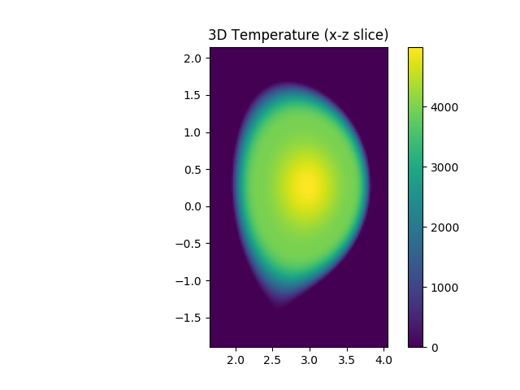
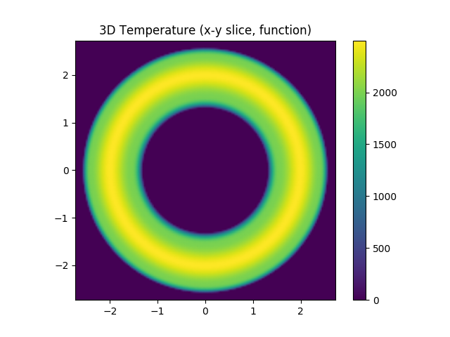

Flux Function Plasmas¶
It is a common use case to approximate the core plasma of a tokamak with 1D flux functions. For example, we might assume the electron temperature can be defined as a 1D profile function of \(\psi_n\), i.e. is constant on flux surfaces. This demonstration shows how to define plasma distributions in terms of 1D flux functions using the EFITEquilibrium’s mapping utilities.
>>> import matplotlib.pyplot as plt
>>>
>>> from cherab.core.math import sample2d, Slice3D, Interpolate1DCubic
>>>
>>> # Get a JET plasma EFITEquilibrium object
>>> from cherab.jet import JETEquilibrium
>>> equilibria = JETEquilibrium(91693)
>>> equilibrium = equilibria.time(55.0)
>>>
>>> # The equilibrium object includes methods for mapping functions onto the flux surfaces.
>>> # These create 2D or 3D functions or e.g. temperature, density, etc., according to the
>>> # profile being mapped. The user can supply either:
>>> # - a python function (with 1 argument - normalised psi),
>>> # - a Function1D object, or
>>> # - a numerical array holding the normalised psi and function values.
>>>
>>> # In this example we create fake 2D and 3D "temperature" profiles from an array of data.
>>> # The array is interpolated with cubic interpolation and then mapped onto the
>>> # normalised psi grid.
>>> temperature_3d = equilibrium.map3d([[0, 0.5, 0.9, 1.0], [5000, 4000, 2000, 0]])
>>>
>>>
>>> # display 3D temperature
>>>
>>> rmin, rmax = equilibrium.r_range
>>> zmin, zmax = equilibrium.z_range
>>> nr = round((rmax - rmin) / 0.025)
>>> nz = round((zmax - zmin) / 0.025)
>>> temperature_slicez = Slice3D(temperature_3d, axis='z', value=0.0)
>>> x, y, temperature_grid = sample2d(temperature_slicez, (-rmax, rmax, nr), (-rmax, rmax, nr))
>>>
>>> plt.figure()
>>> plt.axes(aspect='equal')
>>> plt.pcolormesh(x, y, temperature_grid.transpose(), shading='gouraud')
>>> plt.autoscale(tight=True)
>>> plt.colorbar()
>>> plt.title('3D Temperature (x-y slice)')
>>>
>>>
>>> rmin, rmax = equilibrium.r_range
>>> zmin, zmax = equilibrium.z_range
>>> nr = round((rmax - rmin) / 0.025)
>>> nz = round((zmax - zmin) / 0.025)
>>> temperature_slicey = Slice3D(temperature_3d, axis='y', value=0.0)
>>> x, z, temperature_grid = sample2d(temperature_slicey, (rmin, rmax, nr), (zmin, zmax, nz))
>>>
>>> plt.figure()
>>> plt.axes(aspect='equal')
>>> plt.pcolormesh(x, z, temperature_grid.transpose(), shading='gouraud')
>>> plt.autoscale(tight=True)
>>> plt.colorbar()
>>> plt.title('3D Temperature (x-z slice)')
>>>
>>> plt.show()

{kind=link}
Caption: A slice of the electron temperature through the x-z plane revealing Te as a flux quantitiy.

{kind=link}
Caption: A slice of the electron temperature through the x-y plane.